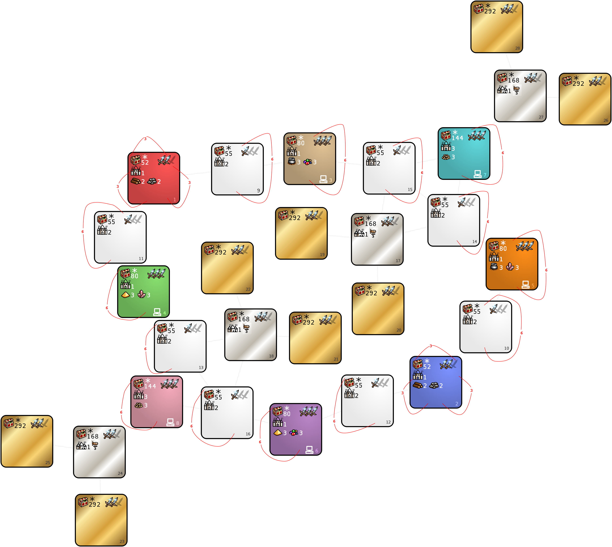

Islands, size XH, but don't expect much sailing.
Many zones, no connections and very easy access to control.
Made by Warzyw,
with substantial advice from Valerin Bizonov.
Last update: 02.01.2024
Settings

Technical datails that you can get from the Template Editor
| Index | Zones | Min | Max | Density | Min | Max | Density | Min | Max | Density |
|---|---|---|---|---|---|---|---|---|---|---|
| 52 | Human zones | 6000 | 9000 | 2 | 2000 | 5000 | 9 | 500 | 1500 | 6 |
| 55 | White zones | 10000 | 15000 | 1 | 3000 | 6000 | 6 | 500 | 3000 | 9 |
| 80 | 3, 4, 5, 6 | 10000 | 15000 | 3 | 3000 | 6000 | 6 | 500 | 3000 | 9 |
| 144 | 7, 8 | 10000 | 15000 | 9 | 3000 | 6000 | 6 | 500 | 3000 | 3 |
| 168 | Silver zones | 15000 | 20000 | 3 | 10000 | 15000 | 6 | 3000 | 6000 | 9 |
| 292 | Golden zones | 20000 | 30000 | 3 | 15000 | 20000 | 6 | 10000 | 15000 | 9 |
| Zone | Terrain |
|---|---|
| 1, 2, 3, 4, 5, 6, 7, 8, 9, 10, 11, 12, 13, 14, 15, 16 | Same as Town |
| Silver zones | All but Sand |
| Golden zones | Sand |
| Zone | Town rules |
|---|---|
| 9 | neutral town 1 has same type as player towns of zone 1 neutral town 2 has same type as player towns of zone 3 |
| 10 | neutral town 1 has same type as player towns of zone 2 neutral town 2 has same type as player towns of zone 5 |
| 11 | neutral town 1 has same type as player towns of zone 1 neutral town 2 has same type as player towns of zone 4 |
| 12 | neutral town 1 has same type as player towns of zone 2 neutral town 2 has same type as player towns of zone 6 |
| 13 | neutral town 1 has same type as player towns of zone 8 neutral town 2 has same type as player towns of zone 4 |
| 14 | neutral town 1 has same type as player towns of zone 7 neutral town 2 has same type as player towns of zone 5 |
| 15 | neutral town 1 has same type as player towns of zone 7 neutral town 2 has same type as player towns of zone 3 |
| 16 | neutral town 1 has same type as player towns of zone 8 neutral town 2 has same type as player towns of zone 6 |
| Zone | Percentage of monsters joining |
|---|---|
| 1, 2, 3, 4, 5, 6, 17, 18, 19, 20, 21, 22, 23, 24, 25, 26, 27, 28 | 50% |
| 7, 8 | 100% |
| White zones | 75% |
| Rule Type | Object | Value | Frequency | Max per Zone | Max on Map |
|---|---|---|---|---|---|
| Enable / Edit | Spell Scroll — any of Fly / Water Walk / Dimension Door / Town Portal | 500 | 100 | no limit | no limit |
| Disable | Random Treasure Artifact | ||||
| Disable | Prison — any amount of hero xp |
| Rule Type | Object | Value | Frequency | Max per Zone |
|---|---|---|---|---|
| Enable / Edit | Spell Scroll — any of Fly / Water Walk / Dimension Door / Town Portal | 500 | 200 | no limit |
| Disable | Pandora's Box with creatures of any kind | |||
| Disable | Pandora's Box with gold — any amount | |||
| Disable | Pandora's Box with spells — any kind | |||
| Enable / Edit | Dwarven Treasury | default | 200 | default |
| Enable / Edit | Medusa Stores | default | 200 | default |
| Enable / Edit | Naga Bank | default | 200 | default |
| Enable / Edit | Mansion | default | 100 | default |
| Enable / Edit | Spit | default | 200 | default |
| Enable / Edit | Black Tower | default | 200 | default |
| Enable / Edit | Churchyard | default | 200 | default |
| Enable / Edit | Ruins | default | 200 | default |
| Enable / Edit | Crypt | default | 200 | default |
| Disable | Dragon Utopia | |||
| Disable | Random Relic | |||
| Disable | Warrior's Tomb |
| Rule Type | Object | Value | Frequency | Max per Zone |
|---|---|---|---|---|
| Enable / Edit | Tavern | 10000 | 100 | 3 |
| Enable / Edit | Town Gate | default | 100 | default |
| Enable / Edit | Prison — hero with 500000 xp | default | 100 | 1 |
| Enable / Edit | Prison — hero with 90000 xp | default | 100 | 1 |
| Disable | Pandora's Box with experience — any amount | |||
| Disable | Pandora's Box with spells — any kind | |||
| Disable | Pandora's Box with gold — any amount | |||
| Enable / Edit | Library of Enlightenment | default | 100 | default |
| Rule Type | Object | Value | Frequency | Max per Zone |
|---|---|---|---|---|
| Disable | Pandora's Box with creatures of any kind | |||
| Disable | Pandora's Box with experience — any amount | |||
| Disable | Pandora's Box with gold — any amount | |||
| Enable / Edit | Tavern | 10000 | 100 | 3 |
| Rule Type | Object | Value | Frequency | Max per Zone |
|---|---|---|---|---|
| Disable | Pandora's Box with creatures of any kind | |||
| Disable | Pandora's Box with spells — any kind | |||
| Disable | Pandora's Box with experience — any amount | |||
| Disable | Dragon Utopia | |||
| Disable | Random Relic | |||
| Disable | Warrior's Tomb | |||
| Enable / Edit | Star Axis | default | 200 | default |
| Enable / Edit | Garden of Revelation | default | 200 | default |
| Enable / Edit | School of Magic | default | 100 | default |
| Enable / Edit | Colosseum of the Magi | default | 100 | default |
| Rule Type | Object | Value | Frequency | Max per Zone |
|---|---|---|---|---|
| Disable | Pandora's Box with experience — any amount | |||
| Disable | Pandora's Box with creatures of any kind | |||
| Disable | Pandora's Box with spells — any kind | |||
| Disable | Dragon Utopia | |||
| Disable | Random Relic | |||
| Disable | Warrior's Tomb | |||
| Enable / Edit | Star Axis | default | 200 | default |
| Enable / Edit | Garden of Revelation | default | 200 | default |
| Enable / Edit | School of Magic | default | 100 | default |
| Enable / Edit | Colosseum of the Magi | default | 100 | default |
| Rule Type | Object | Value | Frequency | Max per Zone |
|---|---|---|---|---|
| Disable | Pandora's Box with spells — any kind | |||
| Disable | Pandora's Box with gold — any amount | |||
| Disable | Pandora's Box with experience — any amount | |||
| Disable | Dragon Utopia | |||
| Disable | Random Relic | |||
| Disable | Warrior's Tomb |